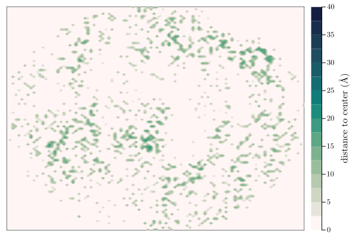
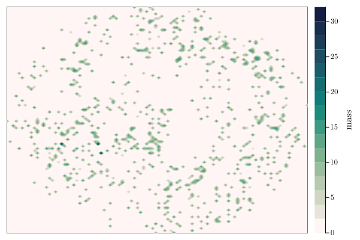

Hammer-Aitoff projection
The Hammer-Aitoff projection maps the surface of a sphere onto an ellipse, preserving areas. Applied to a molecular structure, it gives a two-dimensional map of the whole surface of the system, as seen from its center, in a single figure. This is particularly useful for large, roughly spherical assemblies, such as viral capsids and envelopes, where any single view of the 3D structure hides half of the surface.
How the projection works
For each atom, the direction from a center (by default, the center of mass of the selection) to the atom is converted into a latitude $\varphi \in [-\pi/2, \pi/2]$ and a longitude $\lambda \in [-\pi, \pi]$:
\[\varphi = \arcsin\left(\frac{z}{r}\right), \qquad \lambda = \operatorname{atan}(y, x)\]
where (x, y, z) are the coordinates of the atom relative to the center and r its distance to the center. These angles are then mapped onto the plane with
\[x_H = \frac{2\sqrt{2}\,\cos\varphi\,\sin(\lambda/2)}{\sqrt{1 + \cos\varphi\,\cos(\lambda/2)}}, \qquad y_H = \frac{\sqrt{2}\,\sin\varphi}{\sqrt{1 + \cos\varphi\,\cos(\lambda/2)}}\]
so that all points lie inside the ellipse $(x_H / 2\sqrt{2})^2 + (y_H / \sqrt{2})^2 \leq 1$. Because the projection preserves areas, regions of the same size on the surface occupy the same area in the map, regardless of where they are.
Only the direction of each atom is used: atoms along the same line from the center fall on the same point of the map. The value shown in each region of the map is a statistic (mean, sum or count) of the values of all atoms projected onto it.
Projecting the atoms
hammer_aitoff_projection projects the atoms, and returns a HammerAitoffProjection, which contains the atoms, the center of the projection and the projected coordinates of each atom (fields x and y). The input structure is not modified.
using PDBTools, LazyArtifacts
atoms = read_pdb(PDBTools.test_file("structure.pdb"), "protein")
proj = hammer_aitoff_projection(atoms)HammerAitoffProjection of 1463 atoms, with center at [0.013, -0.095, -0.107]proj.x[1:3], proj.y[1:3]([-1.9547433057872783, -1.9772693679291504, -1.9895608721677702], [-0.3446782293439409, -0.33463904545960355, -0.34774653860054583])Heat maps of per-atom properties
hammer_aitoff_map projects the atoms, divides the map into nbins × nbins bins and computes, for each bin, a statistic of the values of the atoms that fell inside it. Any per-atom property can be used: B-factors, partial charges, contributions to coordination numbers, distances, etc. The resulting HammerAitoffMap is plotted with heatmap (Plots must be loaded).
Here, each atom is colored by its distance to the center of mass, which highlights protrusions and cavities of the surface:
using Plots
c = center_of_mass(atoms)
dist = [sqrt((at.x - c[1])^2 + (at.y - c[2])^2 + (at.z - c[3])^2) for at in atoms]
map = hammer_aitoff_map(atoms, dist; nbins = 100)HammerAitoffMap of 1463 atoms
Bins: 100 × 100, statistic: :mean
Range of values: (0.0, 20.250505447387695)heatmap(map; colorbar_title = "distance to center (Å)")
The statistic keyword of hammer_aitoff_map defines how the values inside a bin are combined:
:mean(default): for intensive properties, such as B-factors or distances;:sum: for additive properties, such as atomic contributions to a coordination number;:count: number of atoms in each bin (the values are ignored).
To compare several structures on the same color scale, fix the limits with clims:
heatmap(map; clims = (0, 40), colorbar_title = "distance to center (Å)")
A map can also be computed from a projection, such that maps of several properties of the same atoms do not require projecting the atoms again:
map_mass = hammer_aitoff_map(proj, mass.(atoms); nbins = 100)
heatmap(map_mass; colorbar_title = "mass")
The bin centers and the binned values are available in the xbin, ybin and values fields of the map, where values[j, i] is the value of the bin with center (xbin[i], ybin[j]):
size(map.values)(100, 100)Contours of chains and groups of chains
With contours = :chain, a line is drawn around the region occupied by each chain:
heatmap(map; contours = :chain, colorbar_title = "distance to center (Å)")
With contours = :group, the atoms are grouped by a function that receives each atom and returns the name of its group. This is useful, for example, when the structure has many copies of a few proteins (as the capsid and envelope proteins of a virus), whose chains are grouped:
groups = Dict("A" => "protein 1", "B" => "protein 1", "C" => "protein 2")
heatmap(map; contours = :group, groupfun = at -> groups[chain(at)])The figure can be saved with savefig.
Reference
PDBTools.hammer_aitoff_projection — Function
hammer_aitoff_projection(atoms; center = center_of_mass(atoms))Project the atoms onto a plane using the Hammer-Aitoff equal-area projection.
The coordinates of each atom relative to center are converted to a latitude φ and a longitude λ (as seen from center), which are then mapped to planar coordinates. The projected points lie inside the ellipse (x / 2√2)^2 + (y / √2)^2 ≤ 1. Atoms located exactly at center have no defined direction and are placed at (0, 0).
Returns a HammerAitoffProjection, with the projected coordinates of each atom in its x and y fields. The projection can be used to compute maps of several per-atom properties with hammer_aitoff_map, without projecting the atoms again. The input atoms are not modified.
Example
julia> using PDBTools, LazyArtifacts
julia> atoms = read_pdb(PDBTools.test_file("structure.pdb"), "protein");
julia> proj = hammer_aitoff_projection(atoms)
HammerAitoffProjection of 1463 atoms, with center at [0.013, -0.095, -0.107]PDBTools.HammerAitoffProjection — Type
HammerAitoffProjectionProjection of a set of atoms onto a plane, with the Hammer-Aitoff equal-area projection, as returned by hammer_aitoff_projection.
Fields
atoms: the atoms projected (not a copy: if the atoms are moved, the projection is not updated).center: the point from which the directions of the atoms were measured.x,y: the projected coordinates of each atom.
PDBTools.hammer_aitoff_map — Function
hammer_aitoff_map(atoms, values; nbins=100, statistic=:mean, center=center_of_mass(atoms))
hammer_aitoff_map(projection::HammerAitoffProjection, values; nbins=100, statistic=:mean)Compute the map of a per-atom property (values, one value per atom) on the Hammer-Aitoff projection of the structure. The atoms are projected with hammer_aitoff_projection (or a projection computed before is used), the map is divided into nbins × nbins bins, and the value of each bin is a statistic of the values of the atoms that fell inside it. Bins without atoms get 0.0, and values that are NaN or Inf are ignored.
Returns a HammerAitoffMap, which can be plotted with heatmap(map) (requires using Plots).
Keyword arguments
nbins: number of bins along each axis.statistic: how the values inside a bin are combined::mean: the mean of the values (default), for intensive properties, such as B-factors or distances;:sum: the sum of the values, for additive properties, such as atomic contributions to a coordination number;:count: the number of atoms in the bin (the values are ignored).
center: the point from which the directions of the atoms are measured (only when the atoms are given).
Example
julia> using PDBTools, LazyArtifacts
julia> atoms = read_pdb(PDBTools.test_file("structure.pdb"), "protein");
julia> map = hammer_aitoff_map(atoms, mass.(atoms); nbins = 50)
HammerAitoffMap of 1463 atoms
Bins: 50 × 50, statistic: :mean
Range of values: (0.0, 32.060001373291016)PDBTools.HammerAitoffMap — Type
HammerAitoffMapValues of a per-atom property on the Hammer-Aitoff projection of a structure, as returned by hammer_aitoff_map. Plot it with heatmap(map) (requires using Plots).
Fields
projection: theHammerAitoffProjectionof the atoms (which contains the atoms).xbin,ybin: centers of the bins along each axis.values: matrix wherevalues[j, i]is the value of the bin with center(xbin[i], ybin[j]).statistic: how the values inside a bin were combined (:mean,:sumor:count).
Plots.heatmap — Method
heatmap(map::HammerAitoffMap; kwargs...)Plot a heat map of the values of a HammerAitoffMap, as computed by hammer_aitoff_map.
Keyword arguments
colormap=:tempo: color map of the heat map.clims=nothing: color limits as a tuple(min, max). Ifnothing, they are taken from the data.contours=:none: contour mode, one of:none: no contours;:chain(or:chains): draw one contour line around each chain;:group: draw contours around groups of atoms, where the group of an atom is given bygroupfun(atom)(for example, groups of chains, withgroupfun = at -> groups[chain(at)]).
groupfun=chain: function mapping an atom to its group (only used whencontours=:group).contour_color=:grey30: color of the contour lines.colorbar_title="",title="": texts of the color bar and of the plot.
The plot can be saved with savefig.
Example
julia> using PDBTools, LazyArtifacts, Plots
julia> atoms = read_pdb(PDBTools.test_file("structure.pdb"), "protein");
julia> map = hammer_aitoff_map(atoms, beta.(atoms));
julia> heatmap(map; contours = :chain, colorbar_title = "B-factor")